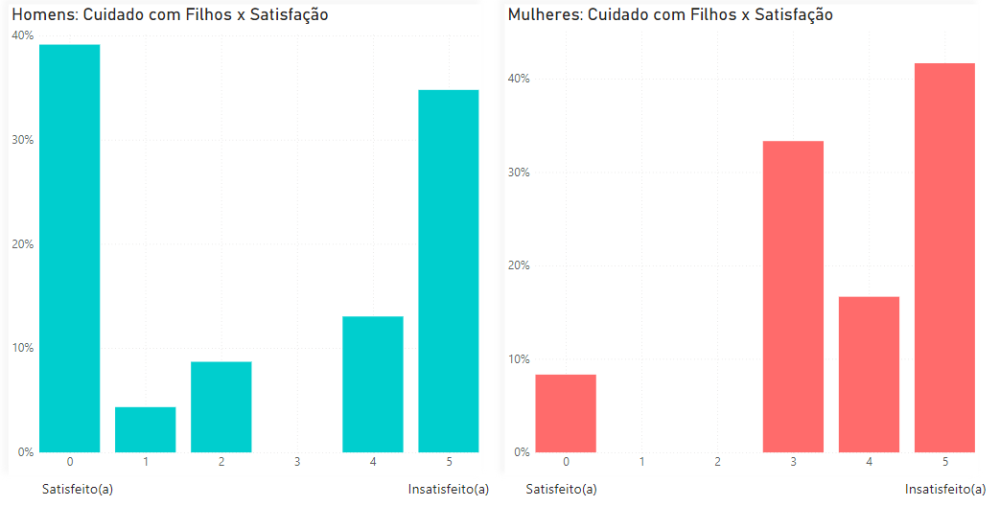
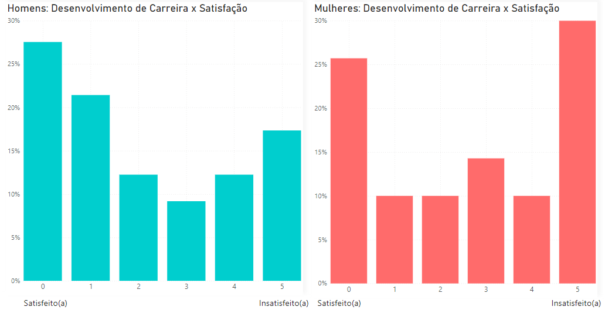
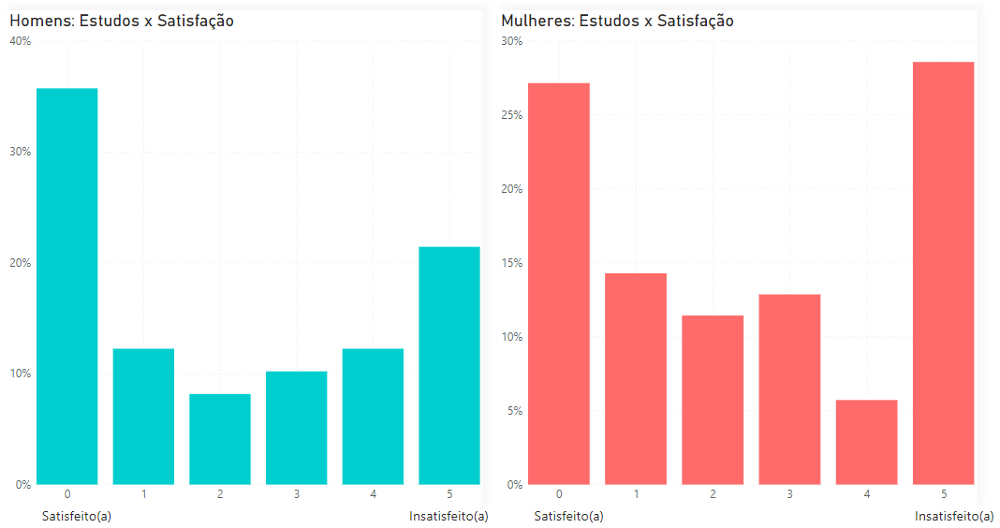
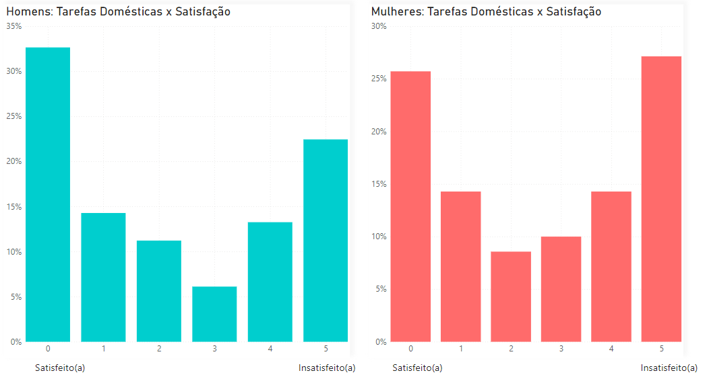
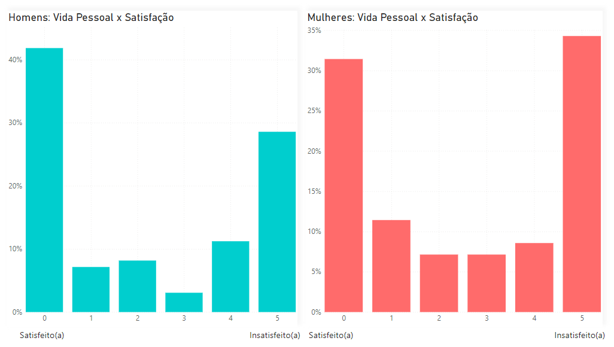

Cuidado com os Filhos
Desenvolvimento de Carreira
Estudos
Tarefas Domésticas
Vida Pessoal
Satisfação no Home Office: Análise Comparativa entre Homens e Mulheres
Nesse contexto, a satisfação é definida como um importante indicador do ambiente de trabalho, representando o grau de contentamento, realização e aspectos positivos relacionados às experiências de trabalho em home office. Os participantes foram convidados a avaliar seu nível de satisfação profissional em uma escala de 0 a 5. Nessa escala, 0 representa satisfação completa, enquanto 5 indica insatisfação, refletindo desafios e preocupações significativas em seu ambiente de trabalho.